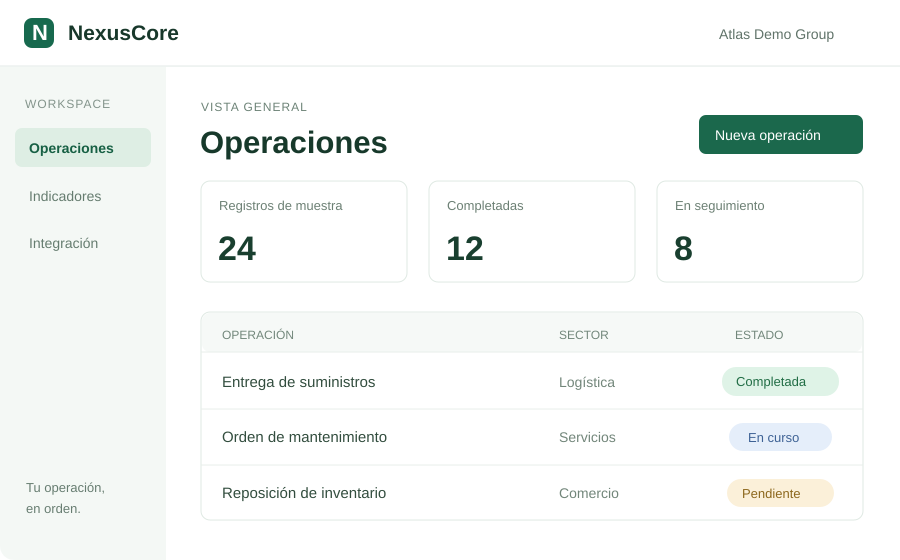

Vista ilustrativa · datos ficticiosAplicación Full StackMVP
NexusCore
De inventario a despacho, en un mismo flujo.
Gestión operativa multisectorial. El piloto local conecta inventario, clientes, ventas, cobros y despachos con estados y trazabilidad.
El problema, la solución y el alcance
El problema
Dar seguimiento a operaciones y conservar sus cambios sin perder consistencia entre los registros y los eventos que se comparten.
La implementación
API NestJS, PostgreSQL y outbox transaccional; control de revisiones, sesiones y permisos por empresa en Workspace. Pruebas de API y aislamiento de datos.
Qué puedes probar
La demo pública funciona con datos ficticios en tu navegador. Workspace comercial y la API se ejecutan por separado siguiendo el repositorio. Es un MVP, con funciones de producción todavía pendientes.